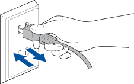

- 1
-
اترك الآلة في وضع الاستعداد لمدة 15 دقيقة.

- 2
-
قم بإيقاف وتشغيل الطاقة باستعمال زر الطاقة أو افصل قابس التيار المتردد وأعد توصيله.
إذا استمر وجود رسالة الخطأ، فإن الآلة بحاجة للتصليح.
لاستعمال المنتج بأمان، يرجى اتباع ما هو مذكور أدناه.
- أدخل القابس بشكلٍ مباشر في مخرج تيار متردد.
- لا تعمد إلى توصيل أكثر من قابس واحد في المخرج الواحد.
- اختر موقعًا تبقى فيه درجة الحرارة بين 10° مئوية و 32.5° مئوية
(50° فهرنهايت و 90.5° فهرنهايت) والرطوبة بين 20% و 80% (بدون تكثف).